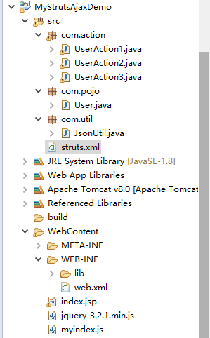
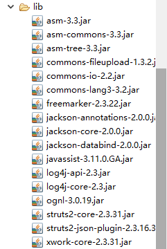
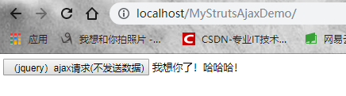
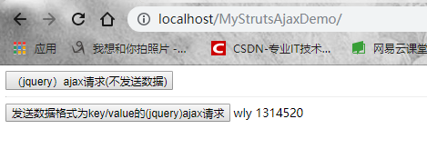
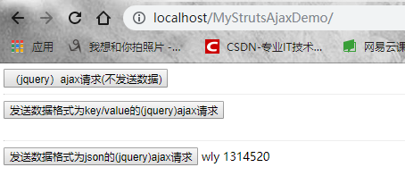

1. Ajax
Ajax(Asynchronous JavaScript and XML，异步JavaScript和XML)时一种创建交互式网页应用的网页开发技术，它并不是一项新的技术，其产生的目的是用于实现页面的局部刷新。通过Ajax技术可以使之前的应用程序在每次提交时不用进行页面的整体刷新，从而提升操作的性能。
2. jQuery
jQuery是一个JavaScript函数库，极大的简化了JavaScript编程，很容易学习。jQuery是目前最流行的开源js框架，并且提供了大量的扩展。
3. Struts2框架
了解一下MVC模式，MVC 模式代表 Model-View-Controller（模型-视图-控制器） 模式。MVC是一种软件设计典范。这种模式用于应用程序的分层开发。
Model（模型） - 模型代表一个存取数据的对象或 JAVA POJO。它也可以带有逻辑，在数据变化时更新控制器。
View（视图） - 视图代表模型包含的数据的可视化。
Controller（控制器） - 控制器作用于模型和视图上。它控制数据流向模型对象，并在数据变化时更新视图。它使视图与模型分离开。
Apache Struts是一个免费的开源MVC框架，用于创建优雅的现代Java Web应用程序。它支持约定胜于配置（约定大于配置，简单来说就是简化我们的开发的，使代码更加简洁，并且有很好的可重用性和可扩展性），可以使用插件体系结构进行扩展，并且附带了支持REST，AJAX和JSON的插件。Struts2是一个基于MVC设计模式的Web应用框架，它本质上相当于一个servlet，在MVC设计模式中，Struts2作为控制器(Controller)来建立模型与视图的数据交互。Struts2是在Struts1和WebWork的技术基础上进行全新开发，以WebWork为核心，采用拦截器的机制来处理用户的请求，这样的设计也使得业务逻辑控制器能够与ServletAPI完全脱离开(解耦合)，方便了我们进行Java Web开发。
4. Struts2处理(jQuery)Ajax请求（（发送key/value数据）/发送json数据）
开发环境：eclipse+Struts2+jsp+jQuery+Ajax+Jackson+tomcat
4.1 Struts2处理(jQuery)Ajax请求（不发送数据，返回普通文本）
(1) 搭建环境
在eclipse中新建Java web项目（会自动导入JRE System Library包），比如我把项目名字写为MyStrutsAjaxDemo，并将项目部署到tomcat服务器上，下面是eclipse中项目的目录结构：
 
项目结构很简单。这里我们看一下lib目录下的jar包，因为我们使用了Struts2框架进行开发，所以必须导入Struts2开发包。Struts2有很多开发包，这里我们导入我们想用的就行了。如上所示。Struts2开发包：asm三个jar包，commons三个，freemarker的jar包，ongl的jar包，strts2-core和核心jar包，Struts2内置的json插件jar包struts2-json（不可以忘记导入哈！），用来处理json数据。javassist的jar包。还有一个xwork-core核心包。日志jar包：log4j（2个）。Jackson开发包：3个。（不懂的话可以看我上篇博客）。好了，jar包就说完了。下面进行开发。
（2）编写jsp文件
客户端不发送数据，服务器端返回一个普通文本。这里我们主要熟悉一下流程，看一下效果，虽然说不发送数据没多大意义。
<%@ page language="java" import="java.util.*" pageEncoding="UTF-8"%>
<%-- <%@ taglib uri="http://java.sun.com/jsp/jstl/core" prefix="c"%> --%>
<%
String path = request.getContextPath();
String basePath = request.getScheme() + "://" + request.getServerName() + ":" + request.getServerPort()
+ path + "/";
%>
<!DOCTYPE html>
<html>
<head>
<base href="<%=basePath%>">
<title>I LOVE YOU</title>
<link rel="stylesheet" type="text/css" href="">
<script type="text/javascript" src="myindex.js"></script>
<script type="text/javascript" src="jquery-3.2.1.min.js"></script>
</head>
<body>
<button id="mybutton1" value="struts2处理（jQuery）Ajax请求" onclick="fun1()" >（jquery）ajax请求(不发送数据)</button>
<spand id="show1" />
<br/>
<hr/>
</body>index.jsp很简单，就定义了一个按钮。调用对应函数。函数名要和js中所写的对应一致。注意要引入自己编写的js文件和jQuery的js文件（注意路径）。
（3）编写myindex.js文件
/**
*
*/
//（jQuery）Ajax请求不发送数据
function fun1(){
$.ajax({
type:"POST",
url:"UserAction1",
data:"",
success:function(data){
$("#show1").html(data);
}
});
}
定义了fun1()函数，注意jQuery的元素选择器的id和html定义<span>标签的id保持一致，主要是为了显示内容。么啥好说的，就是发送的使key/value数据。
（4）新建User实体类
//
package com.entity;
public class User {
private String username;
private String password;
public String getUsername() {
return username;
}
public void setUsername(String username) {
this.username = username;
}
public String getPassword() {
return password;
}
public void setPassword(String password) {
this.password = password;
}
@Override
public String toString() {
return "User [username=" + username + ", password=" + password + "]";
}
}很简单，有2个属性（username和password）。注意Ajax传递的参数名称要和User类的属性保持一致（面向对象。java对象对属性的封装）。
（5）编写Action类
Action类用来处理请求，响应客户端。
package com.action;
import java.io.IOException;
import javax.servlet.http.HttpServletResponse;
import org.apache.struts2.ServletActionContext;
import com.opensymphony.xwork2.ActionSupport;
//不接受参数，打印简单文本
public class UserAction1 extends ActionSupport {
// 获取response对象
private HttpServletResponse response = ServletActionContext.getResponse();
// 只是打印一个字符串文本内容（也可以给客户端返回json数据，处理一下就行了。这里返回文本，主要看一下不同的效果）
public String myexcute1() {
response.setContentType("text/html;charset=utf-8");
String str = "我想你了！哈哈哈！";
try {
response.getWriter().print(str);
} catch (IOException e) {
// TODO Auto-generated catch block
e.printStackTrace();
}
return null;
}
}
代码很简单，都有注释。新建一个Action类，继承了ActionSupport。可以通过ServletActionContext.getResponse()方法获取到response对象。ServletActionContext(com.opensymphony.webwork.ServletActionContext),该类直接继承了ActionContext提供直接与Servlet相关对象访问的功能
ServletActionContext线程安全。这个类主要用于获取servlet的相关对象。使用response获取打印输出流，输出一个普通文本。说一下ActionSupport类， struts2不要求我们自己设计的action类继承任何的struts基类或struts接口，但是我们为了方便实现我们自己的action，大多数情况下都会继承ActionSupport类，并重写此类里的public String execute() throws Exception方法。因为此类中实现了很多的实用借口，提供了很多默认方法，这些默认方法包括国际化信息的方法、默认的处理用户请求的方法等，这样可以大大的简化Acion的开发。Struts获取请求，怎么知道调用那个Action的方法进行处理呢。下面我们配置Struts2的主配置文件struts.xml。
（6）配置struts.xml文件
<?xml version="1.0" encoding="UTF-8"?>
<!DOCTYPE struts PUBLIC
"-//Apache Software Foundation//DTD Struts Configuration 2.3//EN"
"http://struts.apache.org/dtds/struts-2.3.dtd">
<struts>
<constant name="struts.devMode" value="true"></constant>
<constant name="struts.i18n.encoding" value="UTF-8"></constant>
<package name="default" namespace="/" extends="struts-default,json-default">
<action name="UserAction1" class="com.action.UserAction1" method="myexcute1">
<result >
</result>
</action>
</package>
</struts>
子标签constant：定义一些常量。struts.devMode启动开发者模式。struts.i18n.encoding设置请求的编码。这些常量的定义位于struts2核心开发包的default.proprties资源文件中。子标签pakage：name="default"包名，可以随便取，但是不能重复。一个<pakage>可以配置多个<action>。namespace：命名空间。Struts2请求的访问路径：http://ip地址：端口号/工程名/命名空间/Action的名称。extends代表继承的包，Struts2的默认包“default”是继承于"Struts-dafault"包的，struts-default包是在struts-default.xml中定义，struts-default.xml也是Struts2默认配置文件，所以Struts2每次都会自动加载 struts-default.xml文件。struts-defalut.xml位于struts2-core核心包下面。注意到还继承了一个json-default包，json-default是继承struts-default，json这个result type(返回类型)是在json-default (struts2-json-plugin-2.1.8.1.jar\struts-plugin.xml)里面定义的。<action>标签。用来调用某个Action类对应的方法进行处理客户端请求的。我们先来看配置的第一个<action>。name设置action的请求路径。比如我们设置为name="UserAction1"，注意Ajax提交请求的url必须和此时设置的action的name保持一致，不然找不到。class就是Action类的全路径。method就是Action类中的方法名称。上面我们的方法名为myexcute1，所以设置为method="myexcute1"，不要带括号以及参数，只书写方法名称就行了。<result>表示返回的结果集，有2个属性，一个是name：对应Action返回逻辑视图名称，默认为success。一个是type：返回结果类型，默认为dispatcher。因为我们这个方法只返回普通字符串，所以<result>里面就不用写了。空空如也。
（7）配置web.xml文件
web.xml文件还是很重要的，它是tomcat的配置文件，当我们启动一个web项目容器的时候，它首先会加载web.xml文件。
<?xml version="1.0" encoding="UTF-8"?>
<web-app xmlns:xsi="http://www.w3.org/2001/XMLSchema-instance" xmlns="http://xmlns.jcp.org/xml/ns/javaee" xsi:schemaLocation="http://xmlns.jcp.org/xml/ns/javaee http://xmlns.jcp.org/xml/ns/javaee/web-app_3_1.xsd" id="WebApp_ID" version="3.1">
<display-name>StrutsProject</display-name>
<welcome-file-list>
<welcome-file>index.html</welcome-file>
<welcome-file>index.htm</welcome-file>
<welcome-file>index.jsp</welcome-file>
<welcome-file>default.html</welcome-file>
<welcome-file>default.htm</welcome-file>
<welcome-file>default.jsp</welcome-file>
</welcome-file-list>
<!--配置struts2的核心过滤器 -->
<filter>
<!-- 核心过滤器名称 -->
<filter-name>struts2</filter-name>
<!-- 费核心过滤器全类路径（包.类） -->
<filter-class>org.apache.struts2.dispatcher.ng.filter.StrutsPrepareAndExecuteFilter</filter-class>
</filter>
<filter-mapping>
<filter-name>struts2</filter-name>
<!-- 拦截路径 -->
<url-pattern>/*</url-pattern>
</filter-mapping>
</web-app>
配置很简单，就配置了一个Struts2的核心过滤器StrutsPrapareAndExcuteFilter。FilterDispatcher是早期struts2的过滤器，后期的都用StrutsPrepareAndExecuteFilter了。StrutsPrepareAndExecuteFilter名字可知，prepare与execute，前者表示准备，可以说是指filter中的init方法，即配制的导入；后者表示进行过滤，指doFilter方法，即将request请求，转发给对应的 action去处理。在使用struts的时候要在web.xml中配置一个过滤器，来拦截用户发起的请求，并进行一些预处理，根据配置文件把请求分配给对应的action并将请求中的参数与action中的字段进行对应赋值。
（8）运行程序
启动tomcat，在浏览器地址栏输入url，点击按钮，查看效果。完美运行。

4.2 Struts2处理(jQuery)Ajax请求（发送key/value数据，返回json数据）
（1）导入Jackson包
上面导包已经导好了，这里不多说。jackson所需3个jar包（注意要导全）。
（2）编写jsp文件
同理，写一个按钮和显示内容的span标签。
<button id="mybutton2" value="struts2处理（jQuery）Ajax请求" onclick="fun2()" >发送数据格式为key/value的(jquery)ajax请求</button>
<spand id="show2" /><br/>
（3）编写js文件
//使用jquery提交key/value数据（ajax请求）
function fun2(){
$.ajax({
type:"POST",
url:"UserAction2",
data:"username=wly&password=1314520",
success:function(data){
var value=JSON.parse(data)； //json字符串转化为js对象
$("#show2").html(value.username+" "+value.password);
}
});
}
提交路径要和strutst.xml的action的name保持一致。返回的json字符串要通过JSON.parse(data)方法解析为js对象（准确来说，是js可以操作的json对象）。
（4）编写User实体类
和上面User类一样，有2个属性username和password，提供setter,getter和toSring()方法。
（5）编写Action类
package com.action;
import java.io.IOException;
import javax.servlet.http.HttpServletResponse;
import org.apache.struts2.ServletActionContext;
import com.fasterxml.jackson.core.JsonGenerationException;
import com.fasterxml.jackson.databind.JsonMappingException;
import com.fasterxml.jackson.databind.ObjectMapper;
import com.opensymphony.xwork2.ActionSupport;
import com.opensymphony.xwork2.ModelDriven;
import com.pojo.User;
//接受key/value参数，输出json数据
public class UserAction2 extends ActionSupport implements ModelDriven<User> {
// 注意一定要new一个实体对象
private User user = new User();
// 获取response对象
private HttpServletResponse response = ServletActionContext.getResponse();
// 返回的结果集，必须提供getter和setter方法
String result = null;
public String getResult() {
return result;
}
public void setResult(String result) {
this.result = result;
}
// 返回json数据（利用jackson完成java对象与json的转化）
public String myexcute2() {
response.setContentType("application/json;charset=UTF-8");
System.out.println(user);
ObjectMapper json = new ObjectMapper(); // 新建json对象
try {
result = json.writeValueAsString(user); // user对象转化为json字符串
System.out.println(result);
} catch (JsonGenerationException e) {
// TODO Auto-generated catch block
e.printStackTrace();
} catch (JsonMappingException e) {
// TODO Auto-generated catch block
e.printStackTrace();
} catch (IOException e) {
// TODO Auto-generated catch block
e.printStackTrace();
}
return SUCCESS; // 返回SUCCESS标志，主配置文件根据result标签的name来跳转页面或者输出内容。
// Struts2的常量(SUCCESS、NONE、ERROR、INPUT、LOGIN)
}
// 实现模型驱动ModelDriven接口的抽象方法
@Override
public User getModel() {
// TODO Auto-generated method stub
return user;
}
}
这里所以说一下。Struts2接受前台传来的数据的方法（2种）。第一种：属性驱动。（1）使用变量的方式，把字段写在Action类中，并提供setter和getter方法。（2）使用对象的方式。把user对象当作属性封装到Action中，并提供setter和gettter方法。但是要注意前台传值。要使用变量.属性的方式才可以获得到。第二种：模型驱动。也就是本文所使用到的办法。Action类通过实现com.opensymphony.xwork2.ModelDriven<T>接口，并实现接口中的抽象方法 public abstract T getModel()，不需要提供getter和setter方法。但是声名对象的时候一定要实例化。前台传递的参数名称和实体类中的属性名称保持一致即可。这里我们看上面public String myexcute2()个方法，这个方法其实就是获取到user对象，然后利用jackson将user对象转化为json字符串输出。最后返回一个SUCCESS常量，struts2会根据struts.xml配置文件中的<result>的name和type进行页面的跳转或者输出内容。注意这里向客户端输出一个json字符串的结果集，我们用result变量保存起来，并且一定要提供result的setter和getter方法。方法很简单。
（6）配置struts.xml文件
<action name="UserAction2" class="com.action.UserAction2" method="myexcute2">
<!-- 返回json类型数据 -->
<result name="success" type="json">
<param name="root">result</param>
</result>
</action>
配置很简单，把这个<action>放入上面那个<package>标签中就可以了（也可以重新写一个<package>），这里为了方便。注意result的name为success，刚才我们返回的是SUCCESS（代表action执行成功），这是一个struts2的常量，它的值为public static final String SUCCESS = "success"。struts2其他几个常量
NONE(action执行成功，不跳转页面)、ERROR（action执行失败）、INPUT（action为了执行成功需要多次输入）、LOGIN（action不能执行，因为用户没有登录）。<result>标签的type="json"，表示返回的是json数据格式。这里加上了一个param参数。<param name="root">result</param>中，result就是刚才我们action返回的结果集（有getter和setter方法）。name="root"表示从result结果集的根部进行遍历。所以就可以正常返回并解析了。
（7）配置web.xml文件
web.xml的配置和上面一样，就配置一个struts2核心过滤器就ok了。
（8）运行程序
启动tomcat容器，输入地址，完美运行。

4.3 Struts2处理(jQuery)Ajax请求（发送json数据，返回json数据）
（1）编写jsp文件
导入jar包就不说了，就是上面的。
<button id="mybutton3" value="struts2处理（jQuery）Ajax请求" onclick="fun3()" >发送数据格式为json的(jquery)ajax请求</button>
<spand id="show3" /><br/>定义了一个按钮和span标签，很简单。
（2）编写js文件
//使用jquery提交json数据（ajax请求）
function fun3(){
var user={
"username":"wly",
"password":"1314520"
};
$.ajax({
type:"POST",
url:"UserAction3",
contentType:"application/json;charset=UTF-8",
data:JSON.stringify(user), //将js对象转化为json字符串
dataType:"json",
success:function(data){
console.log(data);
var value=JSON.parse(data); //将json字符串解析为js对象
$("#show3").html(value.username+" "+value.password);
}
});
}
上面没啥好说的，就是一些熟悉的内容，不懂的话可以看我前2篇博客。console.log(data)是在web浏览器的控制台进行打印（谷歌浏览器找开发者工具）。
（3）新建User类
不多说，和上面一样。其实我们就只写了一个User类。
（4）新建Action类
第一步：编写json工具类
package com.util;
import java.io.BufferedReader;
import java.io.IOException;
import java.io.InputStreamReader;
import java.io.UnsupportedEncodingException;
import javax.servlet.http.HttpServletRequest;
import com.fasterxml.jackson.databind.ObjectMapper;
import com.pojo.User;
public class JsonUtil {
public static User accept(HttpServletRequest request) throws UnsupportedEncodingException, IOException {
// 读取请求内容
BufferedReader br = new BufferedReader(new InputStreamReader(request.getInputStream(), "UTF-8"));
String line = null;
StringBuilder sb = new StringBuilder();
while ((line = br.readLine()) != null) {
sb.append(line);
}
// 将json字符串转化为java对象
ObjectMapper json = new ObjectMapper();
User user = json.readValue(sb.toString(), User.class);
return user;
}
}
这个类没啥好说的，就是通过BufferedReader类来读取请求内容，并把请求内容按行添加到StringBuilder（字符串变量，线程不安全，单线程下效率比较高）对象中，然后再利用Jackson的核心操作类ObjectMapper类把json字符串转化为user对象返回。
第二步：编写Action类
package com.action;
import java.io.IOException;
import javax.servlet.http.HttpServletRequest;
import javax.servlet.http.HttpServletResponse;
import org.apache.struts2.ServletActionContext;
import com.fasterxml.jackson.core.JsonGenerationException;
import com.fasterxml.jackson.databind.JsonMappingException;
import com.fasterxml.jackson.databind.ObjectMapper;
import com.opensymphony.xwork2.ActionSupport;
import com.pojo.User;
import com.util.JsonUtil;
//接受json数据，打印json数据
public class UserAction3 extends ActionSupport {
// 获取response对象
private HttpServletResponse response = ServletActionContext.getResponse();
private HttpServletRequest request = ServletActionContext.getRequest();
// 返回的结果集，必须提供getter和setter方法
String result = null;
public String getResult() {
return result;
}
public void setResult(String result) {
this.result = result;
}
// 返回json数据（利用jackson完成java对象与json的转化）
public String myexcute3() {
response.setContentType("application/json;charset=UTF-8");
try {
User user = JsonUtil.accept(request);
System.out.println(user);
ObjectMapper json = new ObjectMapper(); // 新建json对象
result = json.writeValueAsString(user); // user对象转化为json字符串
System.out.println(result);
} catch (JsonGenerationException e) {
// TODO Auto-generated catch block
e.printStackTrace();
} catch (JsonMappingException e) {
// TODO Auto-generated catch block
e.printStackTrace();
} catch (IOException e) {
// TODO Auto-generated catch block
e.printStackTrace();
}
return SUCCESS; // 返回SUCCESS标志，主配置文件根据result标签的name来跳转页面或者输出内容。
// Struts2的常量(SUCCESS、NONE、ERROR、INPUT、LOGIN)
}
}
这里使用ServletActionContext类获取了response和requset对象，并且结果集result提供相应的getter和setter方法。最后返回一个json字符串。
（5）配置struts.xml
<action name="UserAction3" class="com.action.UserAction3" method="myexcute3">
<!-- 返回json类型数据 -->
<result name="success" type="json">
<param name="root">result</param>
</result>
</action> 同理，配置这个Action类。action请求名称设置为UserAction3(要和ajax提交的路径一致)，全类路径要书写正确。<result>表示要返回的内容（或页面）。相关配置上面已经解释，这里不多说。
（6）配置web.xml
和上面一样。配置一个struts2核心过滤器。
（7）运行程序

5. 总结
（1）从本次开发看出struts的优缺点。优点：支持插件（比如json插件），ajax支持，通过配置文件，就可以掌握整个系统各个部分之间的关系。实现了MVC模式，层次结构清晰。减少配置（有默认值）。
（2）struts的缺点（通过本次开发）：缺点：对servlet依赖比较强（我们用到了request和response），Action中取得从jsp中传过来的参数时还是有点麻烦。
（3）其实本质上我们还是通过Jackson框架进行json与java对象的相互转化，只不过要依赖于struts-json插件。其实我们只是用符合struts2框架的规范，编写了一些Action类，来响应客户端的请求。其实和之前的编写servlet效果类似。
（4）Jackson类库其实还蛮好用的，不信你试试！
（5）如果有什么错误欢迎各位大佬指出，在下一定洗耳恭听！哈哈！
本篇博客源码链接：https://pan.baidu.com/s/1zUvZxO_eVahocHcjMsyOPA 提取码：nn3g